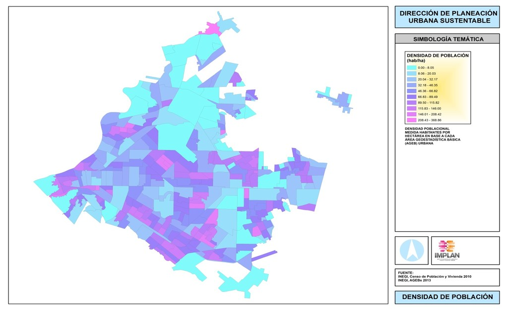

¨La planificación de una ciudad es más que un conjunto de ideas o de opiniones dispersas de los individuos que la habitan, la planificación es una ciencia, o mejor dicho, un conjunto de ciencias que estudian la ciudad, considerándola ya como un organismo físico, ya como una entidad moral¨.
E. Gleaser.
Retomo el tema de la redensificación de ciudades, y de Torreón en especial, pues como ya lo había presentado, las cifras nos indican como el territorio ocupado en la ciudad es siete veces contra tres del crecimiento poblacional de la década de 1970 a la fecha.
¿Cuáles son los principales costos de la expansión urbana?
La expansión urbana está inmersa en un proceso más amplio de construcción que crea beneficios al generar nuevo valor agregado y empleos en el corto plazo. Sin embargo, la expansión también tiene costos para toda la sociedad, que pueden distinguirse en tres tipos: los fiscales generados por la provisión de infraestructura y equipamiento por parte del gobierno; los impuestos a los individuos en la forma de costos de transporte y las externalidades negativas generadas por la expansión, que se reflejan en impactos de salud y ambientales.
Todos estos cuando son valorizados permiten comprender por qué existe la necesidad de planear las ciudades y contener la expansión urbana descontrolada, promoviendo las redensificaciones y así eficientar más lo contenido en infraestructura de las ciudades.
Cuál es la situación de Torreón a detalle:
a) La densidad poblacional media urbana de Torreón al 2010* es de 81.3 habitantes por Hectárea, mientras que comparativamente, la ciudad de Aguascalientes, con una superficie urbana semejante a la de Torreón trae una densidad poblacional de 108.2 habitantes por Hectárea.
b) La densidad más alta que encontramos en la ciudad, según información porAgebs (INEGI) es de 368.8 habitantes por Hectárea, 4.5 veces la media para la ciudad.
c) Estos Agebs se ubican en la parte sur, y sur-poniente de la ciudad, y corresponden a colonias populares, y conjuntos habitacionales institucionales.
d) La dispersión deja grandes espacios baldíos en medio de la ciudad, creando especulación inmobiliaria y acrecentando distancias a recorrer diariamente.
Densidad de Población de Torreón en 2013

Elaboración en IMPLAN.
La expansión de la ciudad tiene un efecto directo sobre el bienestar de los individuos y los hogares laguneros, pues al tener que recorrer mayores distancias se incrementan los gastos en transporte y se reduce el ingreso disponible para otras necesidades que incrementen el bienestar de las familias.

{kind=link}